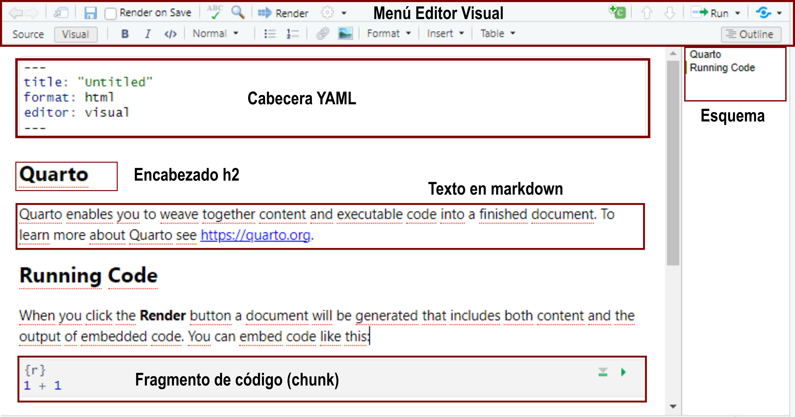

```{r}
#| echo: fenced
1 + 1
```Documentos de Quarto
Introducción
Quarto ofrece un marco de creación unificado para la ciencia de datos, que combina código, resultados del código y escritura. Es decir, combina un lenguaje de programación (R, en nuestro caso pero podríamos usar otros lenguajes como python o julia) con un lenguaje de documentación (markdown + otras utilidades).
Los documentos de Quarto son totalmente reproducibles y admiten docenas de formatos de salida, como archivos HTML, PDF, Word, presentaciones y más.
Los archivos Quarto están diseñados para usarse de tres maneras:
Comunicar resultados y nuestras conclusiones (sin mostrar el código detrás del análisis).
Colaborar con otros científicos de datos que trabajen en el mismo proyecto o estén interesados en nuestro trabajo (aquí seguramente incluimos el código).
Como un entorno en el que hacer ciencia de datos, como un cuaderno de laboratorio moderno donde podemos registrar no solo lo que hicimos, sino también lo que pensamos.
Heredan lo mejor de los 10 años de desarrollo acumulado, dado que los documentos tienen muchas similitudes pero con la ventaja de integrar otras herramientas que surgieron como extensiones de Rmarkdown.
Conceptos básicos
Quarto es un software que se instala independientemente de R y Rstudio. En si mismo funciona con una interfaz de línea de comandos (CLI).
Su sitio web es https://quarto.org/ y el acceso a la descarga ese encuentra en Get Started. Una vez descargado el ejecutable su instalación es sencilla y similar a cualquier aplicación de Windows.
Las últimas versiones de RStudio ya lo tienen integrado, al igual que markdown y Pandoc, por lo que vamos a utilizarlo directamente sin necesidad de aprendernos los comandos nativos de su línea de comandos.
Cabe destacar que Quarto se encuentra en pleno desarrollo y es habitual que se publiquen versiones actualizadas que incluyen avances y nuevas tecnologías. Estas nuevas versiones demoran un tiempo en aparecer incluídas en RStudio, por lo que se sugiere actualizarlo individualmente.
Anatomía de un documento Quarto
Los archivos fuentes de Quarto tienen extensión .qmd y sus partes fundamentales son:

Editor Visual:
RStudio incorporó un editor gráfico de archivos Quarto, similar a un editor de texto como Word. En lugar de código en texto plano con sus marcas, vemos un aspecto más visual con un menú que permite integrar imágenes, tablas, títulos, colores, etc.
Cabecera YAML:
Esta cabecera inicia todo documento Quarto y contiene los metadatos del archivo con las opciones de configuración generales. Es el lugar donde se define que tipo de documento estamos produciendo (html, pdf, etc).
YAML es un lenguaje de marcas ligero del cual utilizaremos algunas opciones.
Encabezados (títulos) y Outline:
Los documentos Quarto contienen un formato jerárquico con cabeceras que permiten dar estructura al contenido. Además, mientras se escribe, genera un índice (outline) a la derecha del script con el cual nos movemos rápidamente por el documento
Texto en markdown
No solo se puede incluir texto plano acompañado de marcas que le dan un formato particular, sino también embeber imágenes, tablas, fragmentos estéticos diferentes, etc.
Fragmentos de código (chunk)
En estas secciones delimitadas se incluye el código que se ejecuta (y también puede ser mostrado) en el documento final. Estos chunk, como se denominan en inglés, pueden ser de diferentes lenguajes (en nuestro caso utilizaremos habitualmente el lenguaje R).
Editor visual de RStudio
El editor visual proporciona una interfaz sencilla para la creación de documentos de Quarto. En el fondo, el texto de los documentos de Quarto (archivos .qmd) se escribe en lenguaje Markdown, un conjunto ligero de marcas para formatear archivos de texto sin formato. De hecho, Quarto utiliza Markdown de Pandoc (una versión ampliada de Markdown que Quarto entiende), incluidas tablas, citas, referencias cruzadas, notas al pie, listas de definiciones, atributos, HTML/TeX sin formato y más, así como compatibilidad con la ejecución de celdas de código y la visualización de su salida en línea. Si bien Markdown está diseñado para ser fácil de leer y escribir, requiere aprender una nueva sintaxis, por lo tanto conviene utilizar las herramientas del modo visual.
Edición en código fuente
El modo source (fuente) sirve para editar el documento en markdown puro con todas sus marcas sin la ayuda del modo visual. Para aquellos acostumbrados a sus sintaxis posibilita escribir directamente con la estructura adecuada y depurar sus errores.
Ahora bien, cuando trabajamos en el editor visual aunque nos muestre los elementos con el formato de salida, en realidad en el documento guarda su contenido en Markdown simple y se puede alternar entre los editores visuales y de source para ver y editar el contenido usando cualquiera de las herramientas.
Fragmentos de código
Para ejecutar código dentro de un documento de Quarto, es necesario insertar un fragmento.
Las tres formas de hacerlo son:
Usar el atajo de teclado
Ctrl+Alt+I.Pulsar el icono del botón “Insert” en la barra de herramientas del editor.
Escribir manualmente los delimitadores de fragmentos ```{r} y ```.
El código que se incluye tiene las misma características que el código de un script común de R. Lo que si hay que tener en cuenta es que la activación de paquetes y la lectura de archivos debe ser explícita dentro del documento, es decir aunque tengamos algún paquete activo en la sesión de trabajo o datos leídos en el entorno de trabajo, si estos no figuran dentro de algún fragmento del documento (por ejemplo, porque se ejecutaron en consola directamente) al momento de renderizar vamos a tener la devolución de un error.
Opciones de fragmentos
Dentro de los fragmentos de código se puede declarar metadatos llamados opciones de ejecución.
El formato sintáctico en Quarto tiene la forma #| y suele encabezar el fragmento.
En el ejemplo anterior echo: fenced es una opción de ejecución que como metadato asociado al código provoca que en el documento renderizado dicho código se muestre junto al resultado incluída la opción de ejecución.
El motor Knitr incluído en RStudio es el que proporciona casi 60 opciones de ejecución que se pueden usar para personalizar los fragmentos de código.
La lista completa de códigos se puede ver en https://yihui.org/knitr/options.
Algunas de las opciones más importantes para controlar bloques son:
eval: falseEvita que se evalúe el código (y, obviamente, si no se ejecuta el código, no se generarán resultados). Esto es útil para mostrar código de ejemplo o para deshabilitar un bloque grande de código sin comentar cada línea.include: falseEjecuta el código, pero no muestra el código ni los resultados en el documento final. Puede servir para tareas internas.echo: falseEvita que el código, pero no los resultados, aparezcan en el archivo final.message: falseowarning: falseEvita que aparezcan mensajes o advertencias en el archivo terminado.results: hideOculta la salida impresa;fig-show: hideOculta los gráficos.error: trueHace que la renderización continúe incluso si el código devuelve un error.
Formatos
Los formatos de salida de Quarto son bien variados y todos se definen dentro del encabezado YAML del documento.
De forma predeterminada la salida es HTML y una cabecera básica sería:
---
title: "Título del documento"
format: html
---En esta misma cabecera se incluyen también las opciones de salida o renderizado, por ejemplo:
---
title: "Título del documento"
format:
html:
toc: true
toc_float: true
---La salida será un archivo html con tabla de contenidos (toc) flotante.
Otros formatos posibles son:
Documentos
pdfcrea un PDF con LaTeX (un sistema de diseño de documentos de código abierto)typstcrea un PDF con typst (un sistema de composición moderno y sencillo de documentos pdf)docxconstruye documentos de Microsoft Word ( .docx).odtconstruye documentos OpenDocument Text ( .odt).rtfconstruye documentos con formato de texto enriquecido ( .rtf).
Presentaciones
revealjsPresentación HTML con RevealJSpptxPresentación de PowerpointbeamerPresentación en PDF con LaTeX Beamer.
Existen numerosas opciones relacionadas al tipo de salida propuesta que se pueden encontrar en cada apartado de la guía oficial de Quarto.